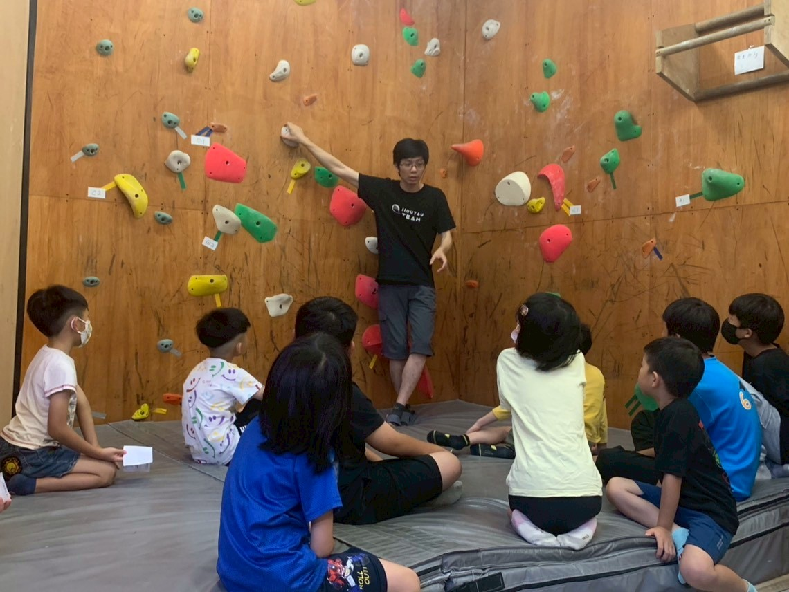
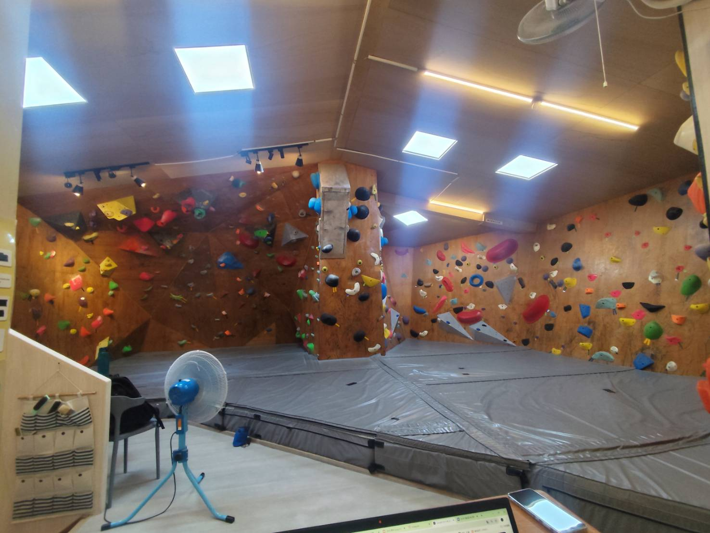
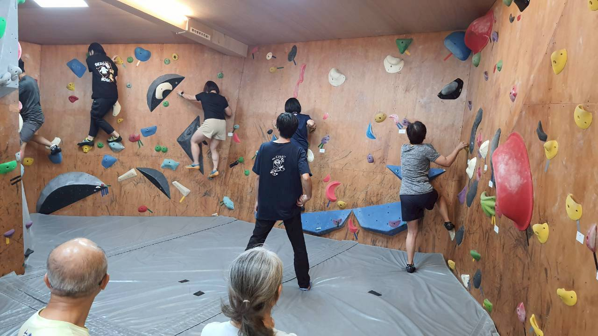
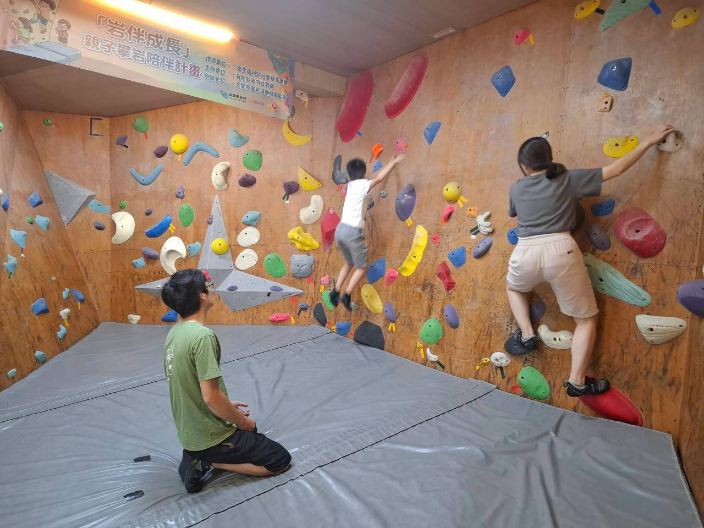

Facilities
館內有什麼
我們位於宜蘭市健康路三段 66 號（原馬西的店），就在新月廣場旁邊，逛完街走過來只要 3 分鐘。
多角度抱石岩牆
從入門的垂直面到需要技巧的傾斜面都有。不同角度練到的身體部位不一樣，這也是抱石好玩的地方。
厚軟落地墊
抱石區下方鋪設厚軟墊，落地的安全由場地幫你顧好。你只需要學會正確的落地姿勢，現場人員都會示範。
顏色分級路線
路線依顏色區分，從最簡單到進階挑戰都有。第一次來的人，通常都能在半小時內完成第一條路線。
定期更換路線
我們會定期換線，讓每一次來都有新的課題可以解。對常來的岩友來說，這是最實際的福利。
岩鞋租借
沒有自己的岩鞋沒關係，現場可租借。建議先租借試試腳感，確定喜歡這項運動再考慮購買。
基本設施
設有置物與休息空間，讓你可以安心放下隨身物品、喝水喘口氣。實際開放項目以現場為準。
Reading Routes
怎麼看懂一條路線？
別被「V 幾」嚇到，那只是一個參考值。看懂下面這幾件事，你就能自己開始玩。
1. 顏色＝路線
同一條路線的岩點顏色相同。牆上可能同時存在好幾條不同顏色的路線，各自獨立。你只要挑一個顏色，手腳都放在同色岩點上。
2. 起攀點與結束點
每條路線都有標示的起攀點與結束點。從起攀點開始，爬到結束點並穩定控制住身體，就算完成（Top）。
3. V 系統難度分級
抱石常用「V 系統」標示難度，數字越大越難。V0 是最入門的路線，通常第一次來的人就能完成；V3、V4 以上則需要一些練習與技巧累積。
V0 的岩點通常比較大、比較好抓，身體姿勢也相對自然，不太需要強大的上肢力量。你可以把它想成「給第一次攀岩的人設計的路線」。每間岩館的定線風格不同，同一級數的體感也會有差異。

Difficulty Guide
我大概會落在哪一級？
這只是一個粗略的參考。每個人的身體條件不同，級數只是幫助你選路線的工具，不是評價。
| 級數區間 | 體感描述 | 適合誰 |
|---|---|---|
| V0～V1 | 岩點大、好抓，動作直覺，不太吃力量。 | 第一次攀岩、親子、想熟悉基本動作的人。 |
| V2～V3 | 開始需要一些身體協調與重心轉移，會有「想一下才解開」的動作。 | 來過幾次、想開始練技巧的人。 |
| V4～V5 | 需要較好的手指力量與身體控制，動作常常不是第一眼看得出來。 | 有固定練習習慣的岩友。 |
| V6 以上 | 高難度路線，需要長期訓練與細膩的動作調整。 | 進階攀岩者。 |
※ 各岩館的定線風格與級數體感不同，以上僅為一般性參考。館內實際路線配置與級數，以現場標示為準——有疑問直接問現場人員最快。
Best Time to Visit
什麼時候來最舒服？
避開人潮，你可以更自在地試路線，也不用等牆。
平日晚間 17:00–19:00
剛開館的時段通常人比較少，適合第一次來、想慢慢熟悉環境的人。也是平日下班後想動一動的好選擇。
假日午後 14:00–17:00
親子家庭最多的時段，氣氛熱鬧。想帶孩子來、讓他和同齡朋友一起玩的話，這個時段最合適。
宜蘭的下雨天
宜蘭多雨，室內攀岩是很好的雨天備案。不用看天氣、不用曬太陽，整個下午都能好好流汗。
提醒：出發前先來電確認
如遇連假、換線或特殊活動，營業時間可能調整。出發前建議先來電 0986-567-929 確認當日營業狀況，才不會白跑一趟。
出發前來電 0986-567-929，我們可以告訴你當天的時段狀況，也會提醒你最新的營業時間與活動公告。
Gallery
看看久淘的樣子

抱石空間
多面岩牆與不同角度，從入門到進階都有適合的路線。

教練指導
想學得更快，可以直接問教練或預約一對一課程。

親子同樂
孩子在軟墊上玩得開心，大人也能一起動起來。
※ 以上為情境示意圖，實際場地配置與路線以現場為準；想知道最新換線狀況，歡迎追蹤官方 IG。